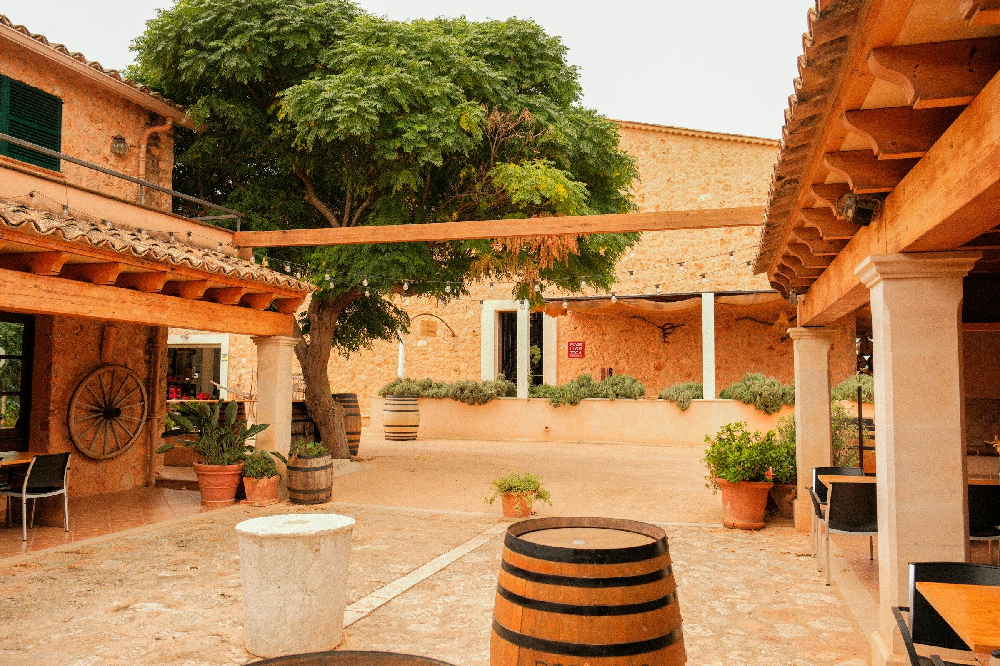

Leadership Retreat Agenda: A 3-Day Template
A proven 3-day leadership retreat agenda with session ideas, timings, facilitation tips and the right venue, for executive teams of 6 to 25 people.

A leadership retreat is not a smaller company offsite. It's a concentrated space for the people who run the business to step back, have the difficult conversations and leave aligned. The agenda matters enormously. Here is a template that works for executive teams of 6 to 25 people.
Before the retreat
- Agree on three outcomes. For example: next year's priorities, a decision on a reorganisation, and how the leadership team works together.
- Send a pre-read one week before, with data and the questions to answer.
- Interview participants individually if possible, to surface topics that won't come up in the room.
- Choose a facilitator if the CEO wants to participate fully rather than run the sessions.
The venue
Privacy and calm matter more than activities. Look for an exclusive-use villa, a quinta or a small hotel with a quiet meeting room, natural light and space to walk. Tuscany, the Douro, the Peloponnese and Mallorca's mountains are favourites. Read how to choose an offsite venue.
Day 1: arrive and open up
- 12:00–14:00 Arrivals and lunch.
- 14:30–16:30 Opening session: where are we really? A candid review of the year using data and the pre-read.
- 16:30–17:00 Break.
- 17:00–18:30 Walking session: pairs walk and discuss one question, then share back.
- 20:00 Dinner together, no agenda.

Day 2: decide
- 08:30–10:30 Strategy session: the three to five priorities for next year. Use a structured method (see strategy workshop formats).
- 10:30–11:00 Break.
- 11:00–12:30 Trade-offs: what we stop doing. Often the most valuable hour of the retreat.
- 12:30–14:00 Lunch.
- 14:00–17:00 Shared experience: a hike, a sailing trip or a cooking class. Choose something calm that encourages conversation.
- 19:30 Dinner somewhere special.
Day 3: commit
- 08:30–10:00 How we work together: feedback, decision rights, meeting rhythm.
- 10:00–10:30 Break.
- 10:30–12:00 Commitments: owners, deadlines, and how decisions will be communicated to the company.
- 12:00 Closing lunch, departures.
Facilitation tips
- Phones away during sessions.
- One topic per session, with a clear question.
- Write decisions down live and read them back at the end of each day.
- Protect free time. Some of the best conversations happen on a walk or at dinner.
After the retreat
Share a one-page summary within 48 hours of returning, then a company-wide message within a week. Schedule a follow-up meeting one month later to check progress.
Plan your leadership retreat
See our leadership retreat format, or talk to our expert. We'll suggest calm, private venues and handle every flight and transfer so your leaders can focus.
Frequently asked questions
How long should a leadership retreat be?
Two to three nights gives enough time for deep discussion, decisions and some shared experience without overloading the team.
Should a leadership retreat have a facilitator?
It helps, especially when the CEO wants to participate fully or when difficult topics are on the table.
What makes a good leadership retreat venue?
Privacy, a calm meeting room with natural light, good food and space to walk and think. Exclusive-use villas and small hotels are ideal.
Let's plan your team's next retreat
Venue, programme, activities and every participant's flight, handled by one team. It starts with a call with our expert.
Keep reading
All articles
Company Offsite vs Retreat vs Seminar: What's the Difference?
Offsite, retreat, seminar, kickoff, incentive: what each term really means, when to use which format, and how to choose for your team.

How to Choose an Offsite Venue: 10 Questions to Ask
The 10 questions to ask before booking a company retreat venue: meeting rooms, Wi-Fi, rooms, food, exclusivity, access, contracts and more.

Strategy Workshop Formats for Your Next Offsite
Proven workshop formats for strategy days at an offsite: pre-mortems, 1-2-4-All, start/stop/continue, priority voting and more, with timings and tips.